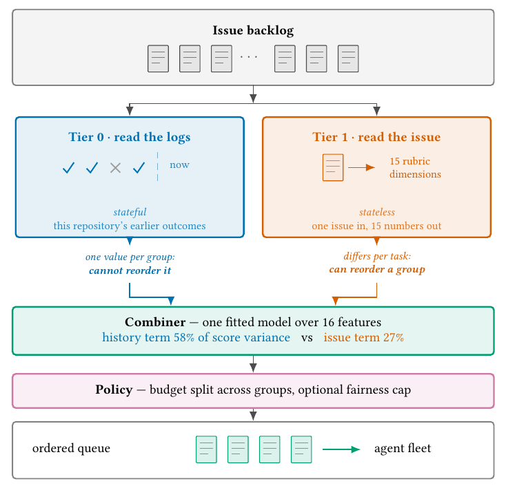
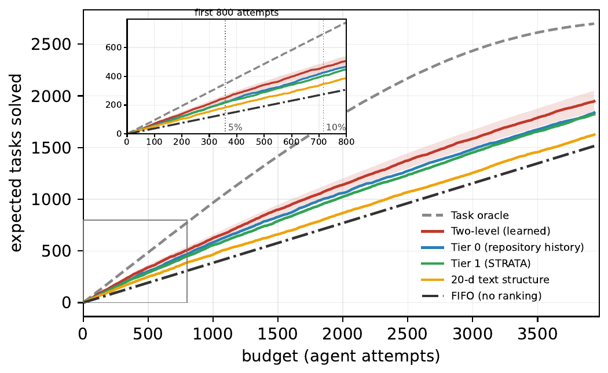
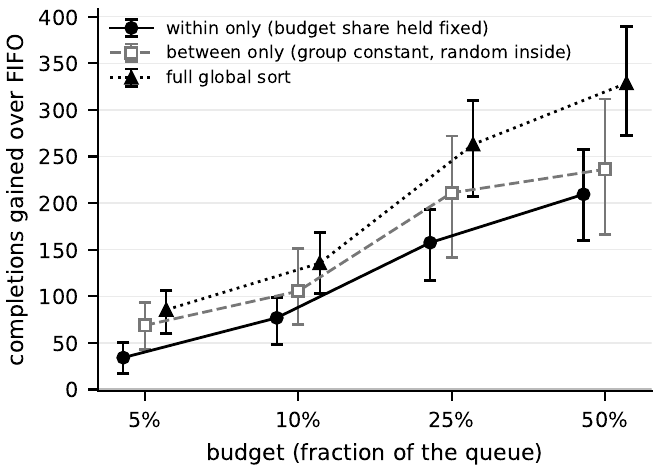

Two decisions, not one
An agent attempt costs about a dollar [1], and 40% of the tasks in our data are solved by no recorded run. Earlier work aborts a failing run after it has started [2–4]. STRATA decides before dispatch.
Which repository gets budget and which issue inside it goes first are different questions. A repository's past success rate answers the first and says nothing about the second, because every issue in it gets the same number. Pooled metrics hide this, so a score that only recognises hard repositories looks good while ordering nothing.
Tier 0 is free: the repository's earlier success rate, constant inside it. Tier 1 scores the issue text on a 15-dimension rubric [1] with a cheap model, at $0.00008 per issue. The combiner lets history move a repository's whole block of issues up or down a queue, but never reorder the issues inside it.

What it buys
On 22,625 real tasks from SWE-bench [5] and related datasets [6, 7], STRATA completes 82%, 68%, 51% and 32% more tasks than a random order when the budget covers 5, 10, 25 and 50% of the backlog. To reach a given number of solved tasks it saves 32 to 45% of the agent budget, and the triage itself costs 0.11% of total spend.
Each level pays on its own. Ordering inside repositories alone and choosing between repositories alone both add completions at every budget, which is why the two decisions are kept separate.


As a system
Events go to Kafka keyed by repository, so Tier 0 is a local aggregate with no distributed join, and stateless Tier 1 workers scale out. PostgreSQL holds the state and Spark rebuilds the history. A read-only GitHub App feeds the issues, and agents take work from the queue through leases.
References
- C. Ge, D. Kryvosheieva, D. Fried, U. Girit, K. Hariharan. Agent psychometrics: Task-level performance prediction in agentic coding benchmarks. COLM, 2026. arXiv:2604.00594.
- C. Wang et al. Fail-fast, restart-smart: Early failure prediction and restart for SWE agentic tasks. arXiv:2608.03222, 2026.
- K. Ruan et al. Doomed from the start: Early abort of LLM agent episodes via a recall-controlled probe cascade. arXiv:2607.06503, 2026.
- Y. Shi et al. EarlyEval: Cheaper agent evaluation via early outcome prediction. arXiv:2609.02783, 2026.
- C. E. Jimenez et al. SWE-bench: Can language models resolve real-world GitHub issues? ICLR, 2024.
- OpenAI. Introducing SWE-bench Verified. 2024.
- J. Pan et al. Training software engineering agents and verifiers with SWE-Gym. arXiv:2412.21139, 2024.